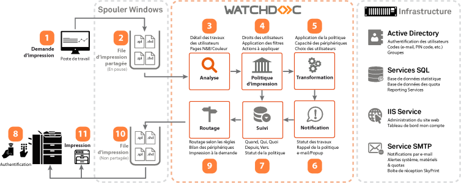
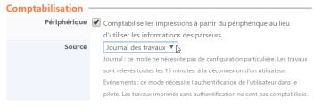
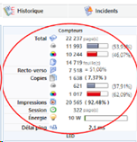

Contexte
Les périphériques gérés par Watchdoc possèdent parfois leurs propres compteurs. Or, il arrive que l'on constate une différence entre le compteur d'un périphérique et les données de comptabilisation remontées dans Watchdoc, une incohérence ou une lacune dans les données de comptabilisation.
Pour les besoins de l'analyse, il est nécessaire de procéder à la collecte des données et à l'envoi des sources d'analyse (fichiers SNMP ou spools) au Support Doxense® via Connect.
Sources d'analyse
En fonction de la nature de l'erreur, deux principales sources d'analyse peuvent être étudiées afin d'orienter le diagnostic et la solution de résolution :
-
si l'anomalie concerne les bilans, statistiques, rapports WRS, elle peut être analysée à l'aide des spools. Un écart important entre la comptabilisation des spools par Watchdoc et les compteurs d’impression du périphérique, peut avoir deux causes :
-
travaux imprimés hors files d’impression partagées : il convient de s'assurer que toutes les impressions sont bien prises en charge par la file d'impression partagée, contrôlée par Watchdoc (et non directement par IP ou via la file shadow) ;
-
interprétation du compteur : si l'erreur concerne un périphérique non doté d'un WES (Watchdoc embarqué), il convient de tenir compte du fait que les copies, numérisations et fax peuvent être pris en compte. Par ailleurs, certains constructeurs comptent deux A4 pour un A3 (un A3 comptabilisé 1 dans Watchdoc peut être comptabilisé 2 sur le compteur machine).
Pour comprendre la cause de l'erreur, il convient donc de collecter et analyser les spools Watchdoc.
-
-
si l'anomalie concerne les informations affichées dans l'onglet Etat de la file d'impression (cartouche kilométrage, consommables, alimentation papier, etc.), elle peut être analysée à l'aide des remontées SNMP
 Simple Network Management Protocol (Protocole Simple de Gestion de Réseau) est un protocole de communication qui permet aux administrateurs réseau de gérer les équipements du réseau, de superviser et de diagnostiquer des problèmes réseaux et matériels à distance.
(Source : Wikipedia).
Simple Network Management Protocol (Protocole Simple de Gestion de Réseau) est un protocole de communication qui permet aux administrateurs réseau de gérer les équipements du réseau, de superviser et de diagnostiquer des problèmes réseaux et matériels à distance.
(Source : Wikipedia).
Modes de comptage standard de Watchdoc
Watchdoc récupère des informations à partir de deux sources différentes : les tâches d'impression et le mode de comptage wes. Voici une explication de ces deux aspects.
Statistiques via les spools d'impression
-
Un travail d'impression (aussi appelé fichier spool), est construit à partir du document original (étape 1 : word, excel...) via un pilote d'imprimante du fabricant avec des paramètres (couleur/mono, recto-verso, taille du papier...).
-
Lorsque le travail d'impression est soumis au serveur par une station de travail (étape 2), le spool d'impression est mis en attente dans la file d'attente d'impression du serveur.
-
Watchdoc analyse (étape 3) le travail d'impression pour en extraire les données essentielles et scanne le fichier spool pour en définir les caractéristiques (noir et blanc ou couleur, nombre de pages, etc.).
-
Toutes les données collectées sont marquées comme imprimées une fois que le document a complètement quitté le serveur d'impression.

Statistiques de comptabilisation WES
Watchdoc peut récupérer des informations sur les imprimantes et les multifonctions via une API de fournisseur d'impression pour collecter les journaux des travaux.
C'est la solution permettant d'être aussi proche que possible de la comptabilité matérielle et doit être activée dans le profil Watchdoc WES.

Statistiques via SNMP

Watchdoc collecte les compteurs des périphériques toutes les heures. Cette comptabilité est établie par dispositif et ne permet pas d'obtenir les utilisations. Elle est asynchrone avec les documents imprimés.
Nous avons des partenariats avec la plupart des fabricants, mais il peut être nécessaire de faire un contrôle pour valider les données (cf. Collecter les données SNMP avec SNMP Walker).
A partir de l'interface Watchdoc, il est possible d'extraire ces compteurs sur une période, le calcul du delta présent dans l'extraction est une simple soustraction entre le compteur en fin de période avec celui du début.
Procédures pour l'analyse
Que l'anomalie soit reproductible ou non, vous pouvez activer la capture et l'archivage des spools en vue d'une analyse (cf. Capturer les spools Watchdoc et Archiver les spools Watchdoc).
De plus, il convient de réaliser une collecte des données SNMP sur le périphérique d'impression afin de comprendre la nature de l'anomalie (cf. Collecter les données SNMP avec SNMP Walker).
Cas où l'information peut créer une confusion
Voici quelques raisons expliquant les écarts de comptage entre des tâches d'impression et les compteurs des périphériques d'impression, mais aussi des incohérences dans la lecture des compteurs qui équipent les périphériques.
Impression directe
Certains clients autorisent le mode d'impression directe par IP Direct, USB Print, FTP ou autre...
Ces modes d'impression contournent le comptage de Watchdoc via les Spools d'impression car Watchdoc compte les pages directement dans la file d'attente d'impression sur les serveurs d'impression.
Ces travaux d'impression incrémenteront donc les compteurs des périphériques, mais pas les statistiques Watchdoc.
Travaux d'impression locaux
Les pages de tests générées directement sur les périphériques par les techniciens sont seulement comptées par les compteurs de ces périphériques et ne sont jamias comptabilisées dans les statistiques Watchdoc.
Fichier de spool corrompu
Un travail d'impression peut être corrompu par le pilote d'imprimante qui crée des lignes de commandes inattendues que le périphérique ne peut pas interpréter. Dans ce cas, les statistiques Watchdoc compteront les pages pour cette tâche mais les compteurs du périphérique ne changent pas.
Problème avec l'analyse de Watchdoc
Certaines applications ou pilotes peuvent ne pas respecter les normes PCL/PS et induire en erreur notre comptabilité alors que l'impression est correcte. Nous travaillons depuis plus de 20 ans à corriger ces caractéristiques liées à l'application ou au pilote.
Seule l'analyse des spools et données SNMP relatifs à l'anomalie nous permettront de comprendre le problème afin de tenter d'améliorer notre outil.
Problème de comptage des périphériques.
Doxense n'a pas toujours la même définition de la couleur que le fabricant. Il faut valider qu'un document monochrome ne signifie pas forcément noir et blanc et que la couleur est bien comptée à partir du premier pixel en couleur présent dans le travail d'impression.
Impression partielle
En cas de bourrage papier ou autre incident matériel du périphérique, il peut arriver que ce périphériquerecommence le traitement de la tâche d'impression. Dans ce cas, les pages qui ont été imprimées avant l'incident sont imprimées deux fois. Le résultat est que ces pages sont comptées deux fois dans les compteurs du matériel mais seulement une fois dans les statistiques des travaux Watchdoc.
Copies et fax quand aucun WES n'est installé
Les copies et les fax sont correctement comptés dans les statistiques des travaux lorsqu'un WES est installé sur un périphérique.
Dans le cas où aucun WES n'est installé, les compteurs du périphérique comptent ces pages, mais elles ne sont pas comptabilisées dans les statistiques de travaux Watchdoc.
(Par exemple, si un utilisateur rencontre une anomalie d'impression qui imprime des hiéroglyphies sur une rame complète de papier, Watchdoc compte le nombre initial de pages du document (1 page par exemple) alors que le périphérique a utilisé et compté 500 pages...).
Copies et télécopies lorsqu'un WES est installé
Par conception, Watchdoc compte les pages pour les travaux qui sont reçus sur les files d'attente surveillées. Après avoir été acheminé vers la file d'attente de sortie, le sort du travail n'est pas pris en compte. Si ce traail est annulé sur le périphérique lui-même, Watchdoc n'en est pas informé.
Donc par défaut, si un travail est annulé pendant qu'il est traité par le périphérique (en raison d'un bourrage papier, d'une mise hors tension, d'une erreur logicielle 900, par exemple), il sera compté dans les statistiques de Watchdoc comme s'il avait été effectivement imprimé.
Mais si un WES est installé et que la comptabilité WES est activée, Watchdoc interrogera périodiquement les statistiques du journal interne du périphérique pour vérifier ce qui a été réellement imprimé (tant que les statistiques du périphérique sont correctes).
Ce qui permet d'ajuster les statistiques des travaux pour les travaux annulés sur le périphérique ou partiellement imprimés.
Travaux au niveau du périphérique
La comptabilité WES permet également de recueillir des statistiques sur les travaux produits à partir des périphériques (copies, impression USB, impression Air, rapports d'appareils, pages de test, télécopies reçues, etc.) ainsi que tous les travaux qui ont été directement soumis à l'appareil sans passer par le serveur d'impression (Direct IP).
Selon la marque, l'ajustement des statistiques peut être décalé de plusieurs minutes car le journal du périphérique peut être assez volumineux (certains périphériques renvoient l'historique complet, ce qui cela prend du temps avant d'être traité par Watchdoc).
Ainsi, sur les périphériques sans WES, vous remarquez probablement un écart croissant avec le temps.
Dans certaines configurations, l'activation de la comptabilité WES n'est donc pas recommandée.
Alignement dans le temps
Il est essentiel de comparer des chiffres alignés dans le temps. Certaines statistiques sont compilées quotidiennement (pages Watchdoc), c'est-à-dire jusqu'à minuit, d'autres sont presque instantanées (compteurs de périphériques), avec quelques retards dus au traitement.
Sauf si vous exécutez le rapport à 1 heure du matin lorsqu'il n'y a pas d'activité, les chiffres peuvent donc être désalignés en raison de l'activité d'impression depuis le début de la journée.
Pour clarifier la situation, il est conseillé de préciser, pour chaque ligne du rapport de statistiques du périphérique, le moment exact où le comptage a été réalisé.
En outre, Watchdoc stocke la date des travaux d'impression envoyés aux files d'attente, et non la date à laquelle les travaux sont imprimés sur papier. Des différences de temps peuvent apparaître, par exemple si l'imprimante manque de papier pendant un certain temps, si le travail est libéré par l'utilisateur plusieurs heures après avoir demandé l'impression...
Unités et taille du support
Watchdoc fournit des statistiques de travail comptées en pages équivalentes au format A4 : 1*A3 = 2*A4
Les compteurs de périphériques sont fournis en clics : 1*A3 = 1*A4
Ainsi, en fonction de la taille réelle du support, vous pouvez voir plus de pages dans Watchdoc que dans les compteurs bruts.
Bugs dans les en-têtes PJL
Certains pilotes de fabricants ont des problèmes avec les en-têtes PJL et ils mettent au carré le nombre de copies.
Par conséquent, nous avons ajouté quelques options dans les paramètres de la file d'attente pour éviter ce comportement.
Comment MADC affecte la lecture du compteur
Lors d'un remplacement matériel pour une file d'impression qui ne change pas de nom, il n'y a pas de cohérence entre le compteur de l'ancien périphérique et ceux du nouveau.
Exemple : l'imprimante A est retirée avec un compteur @125000 pages, l'imprimante B est nouvelle avec un compteur @5 pages. Il y aura une évolution négative du compteur de 5-125000 = -124995 pages.
Lors d'un double échange de matériel (pendant une réparation) sur la même file d'attente d'impression, comme dans le cas précédent, lorsque l'imprimante A revient de réparation et remplace l'imprimante B, pendant la période de remplacement, il n'y a pas de cohérence dans les compteurs.
Comparaison réelle
Pour pouvoir effectuer une comparaison de comptage correct,
-
assurez-vous que l'appareil est inactif depuis minuit ;
-
tirez les statistiques de Watchdoc;
-
lancez un SNMPWalker sur cet appareil pour obtenir les compteurs SNMP réels;
-
vérifiez que les compteurs SNMP correspondent aux compteurs du périphérique dans Watchdoc.
-
L'écart restant devrait être lié aux travaux d'annulation et aux travaux au niveau du périphérique qui n'ont pas pu être rapportés à Watchdoc.